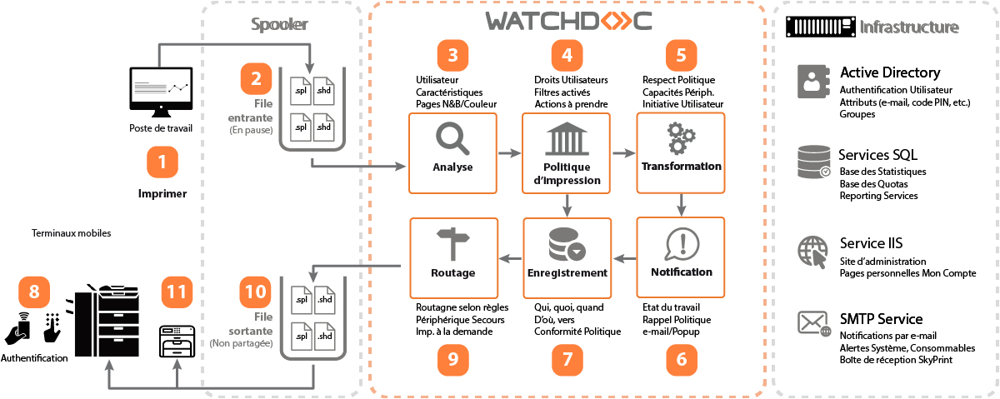

Présentation de Watchdoc
mise à jour : mai 2024
Qu'est-ce que Watchdoc ?
Watchdoc est une solution de gestion et d’optimisation des impressions, développée grâce aux dernières technologies Microsoft®, qui vous permet d'appliquer une politique d'impression éco-responsable.
Outre ses fonctionnalités standard, telles que la comptabilisation et la gestion des quotas, Watchdoc dispose des options suivantes :
-
WRS : Watchdoc for Reporting Services
-
WSC : Watchdoc Supervision Console
-
FIL : file d’impression locale
-
Connecteur Paybox
Architecture technique et fonctionnelle

1. L'utilisateur lance une demande d'impression depuis son poste de travail.
2. Cette demande d'impression est envoyée dans la file partagée du serveur d'impression habituel. La seule différence visible, par rapport à une impression non contrôlée par Watchdoc, est que les files d'impression de ce serveur sont "en pause". Lorsque le travail d'impression est soumis au serveur par un poste client, le spool d'impression est placé en attente dans la file d'impression du serveur.
3. Watchdoc analyse le travail d'impression pour en extraire les informations essentielles et parcourt le fichier de spool pour en définir les caractéristiques (noir & blanc ou couleur, nombre de pages, etc.).
4. Watchdoc compare les caractéristiques du travail d'impression et du profil utilisateur avec les règles établies afin de vérifier s'il existe des actions spécifiques à appliquer (blocage de l'impression, courriel de notification, etc.). Par défaut, en mode comptabilisation, le travail est prêt à être imprimé immédiatement. En mode validation (Print-on-Demand), le travail est gardé en sécurité jusqu'à ce que l'utilisateur le libère depuis l'interface web ou après s'être identifié ou avoir badgé sur le périphérique.
5. Si la transformation de spools est disponible (fonction soumise à compatibilité du périphérique) et activée, elle est appliquée : en fonction du paramétrage défini, Watchdoc suggère ou force l'utilisateur à modifier ses choix d'impression initiaux pour adopter des choix d'impression plus économiques et écologiques : recto-verso plutôt que recto simple, N&B plutôt que couleur, réduction du nombre d'exemplaires.
6. Si nécessaire, l'utilisateur est informé par mail que son travail est en attente, ou qu'il n'a pas été imprimé s'il ne répond pas aux règles définies par la politique d'impression.
7. L'activité d'impression est enregistrée dans la base de données statistiques.
8. En mode "validation", l'utilisateur s'authentifie sur le périphérique d'impression de son choix.
9. Watchdoc dirige le travail d'impression vers le périphérique choisi par l'utilisateur et recueille les données fournies par le périphérique.
10. Lorsque le travail d'impression est libéré, Watchdoc le déplace dans la file d'impression (shadow) du périphérique d'impression.
11. Le travail est imprimé sur le périphérique.
Fonctions clés
-
Audit en temps réel et analyse détaillée de votre activité d’impression mono ou multi-site (qui imprime quel type de document, sur quel périphérique, quand et à quel coût ?).
-
Une interface 100% web accessible depuis tous les postes de travail.
-
Redirection des impressions vers un autre périphérique en cas d'indisponibilité du périphérique initialement sollicité.
-
Libération automatique de vos travaux sur le point d’impression de votre choix grâce à votre badge ou code PIN : déplacement de Watchdoc sur l’ensemble des écrans des périphériques multifonctions (WES).
-
Gestion centralisée du parc de périphériques, même lorsque les points d’impression sont géographiquement distants.
-
Déploiement facile d'une politique d’impression grâce à l’instauration de règles (analyse de la demande, reroutage et suppression) et mesure de l'efficacité de cette politique.
-
Suivi des dépenses d’impression et de copies avec précisions sur le coût papier et le coût énergétique des périphériques dans le coût global d'impression.
-
Sauvegarde des impressions et statistiques associées en cas d’inaccessibilité des ressources (annuaires ou bases de données).
-
Gestion de quotas et de la refacturation.
-
Remontées analytiques des impressions effectuées sur vos imprimantes locales (parallèle, USB, direct IP) et un comptage précis des impressions effectuées sur les périphériques réseau.
-
Gestion des comptes invités.
-
Accès facilité aux périphériques d'impression pour tous les utilisateurs hors annuaire (prestataires externes ou invités), grâce à la gestion d’une base de données indépendante de l’annuaire AD, permettant à ces utilisateurs d'accéder à l’ensemble des fonctions
Bénéfices
-
Réduction des dépenses liées au poste "impression".
-
Protection de l'environnement en réduisant le nombre d'impressions.
-
Augmentation de la qualité de service auprès des utilisateurs.
-
Rationalisation des parcs de périphériques.
-
Optimisation de la gestion des consommables.